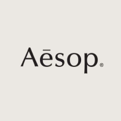

이유림
Yurim Lee
OO고등학교 졸업
OO대학교 OO학과 졸업
OOOO자격증
OOOO교육 수료
토익 OOO점
- HTML/CSS- JAVASCRIPT- JAVA- SQL
www.blog.com
www.github.com
Yurim Lee
OO고등학교 졸업
OO대학교 OO학과 졸업
OOOO자격증
OOOO교육 수료
토익 OOO점
- HTML/CSS- JAVASCRIPT- JAVA- SQL
www.blog.com
www.github.com

Aesop
www.aesop.com
팀 프로젝트(5명)
맡은 부분 : 퍼블리싱, 프론트앤드 개발
프로젝트 기한 : 2024년 6월 2일~2024년 7월 20일
스택 : HTML/CSS, JAVA, JAVASCRIPT, SQL
스킨케어 쇼핑몰을 구현하였습니다
-> 기획서나 깃허브 페이지가 있다면 첨부
프로젝트 후기, 느낀점, 아쉬웠던 점, 보완하고 싶은 점
www.aesop.com
팀 프로젝트(5명)
맡은 부분 : 퍼블리싱, 프론트앤드 개발
프로젝트 기한 : 2024년 6월 2일~2024년 7월 20일
스택 : HTML/CSS, JAVA, JAVASCRIPT, SQL
스킨케어 쇼핑몰을 구현하였습니다
-> 기획서나 깃허브 페이지가 있다면 첨부
프로젝트 후기, 느낀점, 아쉬웠던 점, 보완하고 싶은 점
공중화장실 찾기 서비스
www.whereisbethroom.com
개인 프로젝트
맡은 부분 : 기획, 디자인, 퍼블리싱, 프론트앤드 개발, 백앤드 개발
프로젝트 기한 : 2024년 6월 2일~2024년 7월 20일
스택 : HTML/CSS, JAVA, JAVASCRIPT, SQL사용
공중화장실 찾기 서비스를 구현하였습니다. 카카오 위치api를 사용하여지도와 좌표를 구현했습니다.
-> 기획서나 깃허브 페이지가 있다면 첨부
프로젝트 후기, 느낀점, 아쉬웠던 점, 보완하고 싶은 점
www.whereisbethroom.com
개인 프로젝트
맡은 부분 : 기획, 디자인, 퍼블리싱, 프론트앤드 개발, 백앤드 개발
프로젝트 기한 : 2024년 6월 2일~2024년 7월 20일
스택 : HTML/CSS, JAVA, JAVASCRIPT, SQL사용
공중화장실 찾기 서비스를 구현하였습니다. 카카오 위치api를 사용하여지도와 좌표를 구현했습니다.
-> 기획서나 깃허브 페이지가 있다면 첨부
프로젝트 후기, 느낀점, 아쉬웠던 점, 보완하고 싶은 점
자기소개서
안녕하세요, 저는 김영수입니다. 현재 30세이며, 소프트웨어 개발자로서의 경력을 쌓아가고 있습니다. 대학 시절부터 컴퓨터와 프로그래밍에 흥미를 느껴 IT 분야에 발을 들여놓았으며, 현재까지 다양한 프로젝트와 경험을 통해 성장해왔습니다.
저는 삼육대학교 컴퓨터공학과를 졸업했습니다. 학부 시절에는 주로 알고리즘과 데이터 구조에 관심이 많아 관련 과목에서 우수한 성적을 거두었고, 교내 알고리즘 동아리에서 활동하며 다양한 알고리즘 문제 해결 대회에 참가했습니다. 이 과정에서 문제 해결 능력과 논리적 사고력을 키울 수 있었습니다.
졸업 후, 첫 직장은 한빛소프트라는 중소기업의 소프트웨어 엔지니어였습니다. 이곳에서 2년간 웹 애플리케이션 개발을 담당했습니다. 주로 Java와 Spring Framework를 사용하여 백엔드 개발을 했으며, 데이터베이스 설계 및 최적화 작업에도 참여했습니다. 이 과정에서 웹 서비스의 전반적인 구조와 흐름을 이해하게 되었고, 다양한 고객 요구사항을 해결하는 경험을 쌓았습니다.
그 후, 더 큰 도전과 성장을 위해 네이버에 입사했습니다. 네이버에서는 백엔드 개발팀의 일원으로, 대규모 트래픽을 처리하는 시스템을 개발하고 유지보수하는 역할을 맡았습니다. 이때 경험한 대규모 시스템 아키텍처와 성능 최적화 작업은 저에게 큰 자산이 되었습니다. 또한, 팀원들과 협력하여 애자일 방법론을 적용한 프로젝트 관리를 수행하며, 효율적인 개발 프로세스에 대해 깊이 이해하게 되었습니다.
저는 항상 최신 기술 동향을 따라가며 자기계발을 소홀히 하지 않습니다. 최근에는 클라우드 컴퓨팅과 머신러닝에 관심을 가지고 관련 기술을 학습하고 있으며, 개인 프로젝트로 AWS 기반의 서버리스 애플리케이션을 개발해보기도 했습니다. 이러한 과정을 통해 새로운 기술을 빠르게 습득하고 적용하는 능력을 기르고 있습니다.
제 장점 중 하나는 문제를 해결하는 창의적인 접근 방식입니다. 예기치 않은 문제에 직면했을 때, 기존의 방법에 얽매이지 않고 다양한 시도를 통해 해결책을 찾아내는 것을 즐깁니다. 또한, 팀원들과의 원활한 소통과 협업을 중요시하며, 함께 일할 때 시너지를 발휘할 수 있도록 노력합니다.
앞으로의 목표는 보다 다양한 경험을 쌓아, 기술적으로나 인간적으로 성장하는 것입니다. 특히, 글로벌 프로젝트에 참여하여 다양한 문화와 환경 속에서 일해보고 싶습니다. 이를 통해 더욱 넓은 시야를 갖추고, 글로벌 IT 시장에서 경쟁력 있는 개발자로 성장하고자 합니다.
저는 항상 도전을 두려워하지 않으며, 끊임없이 배우고 성장하는 자세로 임하고 있습니다. 앞으로도 계속해서 새로운 기술을 습득하고, 다양한 경험을 통해 더욱 발전된 모습으로 나아가겠습니다. 감사합니다.
인턴십 경험
대학교 3학년 여름 방학 동안, 저는 IT 솔루션 업체인 소프트웨어 혁신 연구소에서 인턴십을 하게 되었습니다. 이 회사는 주로 중소기업을 위한 ERP 시스템을 개발하고 있었으며, 저는 개발팀의 일원으로 참여했습니다.
인턴십 첫 주, 저희 팀은 새로운 클라이언트의 ERP 시스템 모듈 개발 프로젝트를 맡게 되었습니다. 프로젝트 초기 단계에서 클라이언트의 요구사항을 분석하고, 그에 맞는 시스템 설계를 시작했습니다. 하지만 프로젝트 진행 도중, 데이터베이스 성능 저하 문제가 발생하여 시스템의 응답 시간이 급격히 느려지는 상황이 발생했습니다. 이는 클라이언트의 실시간 데이터 처리에 큰 영향을 미치는 심각한 문제였습니다.
문제의 원인을 파악하기 위해 팀원들과 함께 로그를 분석하고, 쿼리 실행 계획을 검토하기 시작했습니다. 여러 차례의 회의와 브레인스토밍을 통해 문제의 원인이 복잡한 조인 쿼리와 인덱스의 부재라는 것을 발견했습니다. 저는 데이터베이스 최적화와 관련된 자료를 조사하고, 기존 쿼리를 단순화하며 필요한 인덱스를 추가하는 작업을 제안했습니다.
팀 리더의 승인을 받아 제안된 해결 방안을 적용해본 결과, 시스템의 응답 시간이 현저히 개선되었습니다. 또한, 쿼리 최적화와 인덱스 추가로 인해 데이터베이스 성능이 전반적으로 향상되었습니다. 이를 통해 클라이언트는 실시간 데이터 처리가 원활하게 이루어지게 되었고, 프로젝트는 예정된 일정에 맞추어 진행될 수 있었습니다.
이 경험을 통해, 저는 데이터베이스 성능 최적화의 중요성과 문제 해결을 위한 체계적인 접근 방법을 배울 수 있었습니다. 또한, 팀원들과의 협업을 통해 다양한 아이디어를 공유하고, 문제를 해결하는 과정에서 팀워크의 중요성을 깨달았습니다. 인턴십 동안 겪었던 이 문제 해결 경험은 이후 저의 개발자로서의 커리어에 큰 도움이 되었습니다.
또한, 인턴십이 끝난 후에도 해당 프로젝트에 대한 지속적인 관심을 가지며, 정기적으로 클라이언트의 피드백을 확인하고 추가적인 개선 사항을 반영하였습니다. 이를 통해 클라이언트와의 신뢰를 구축하고, 유지보수 작업에서도 중요한 역할을 할 수 있었습니다.
인턴십 기간 동안 다양한 기술을 습득하고, 실무 경험을 쌓으면서 개발자로서의 자신감을 키울 수 있었습니다. 앞으로도 이러한 경험을 바탕으로 더 많은 도전에 임하며, 지속적으로 성장하고 발전하는 개발자가 되기 위해 노력할 것입니다.